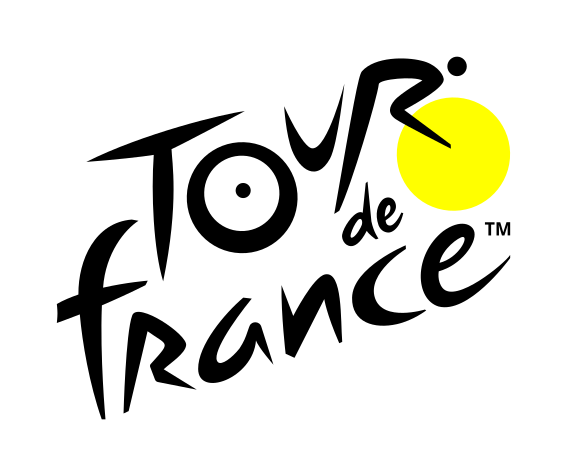
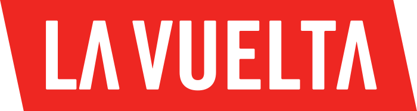

Grand Tour
En cyclisme sur route, le terme « grand tour » fait référence à l'une des trois courses les plus prestigieuses du cyclisme professionnel : le Tour de France, le Tour d'Italie (Giro d'Italia) et le Tour d'Espagne (Vuelta a España).
Se déroulant toutes par étapes, ils peuvent durer jusqu’à 21 jours. Voici ce qu’il convient de retenir sur ces trois grands tours de l’UCI World Tour.

Tour de France
- Créé en 1903, le Tour de France est le plus ancien de ce trident. En plus d’être la plus prestigieuse, il est la course cycliste le plus célèbre du monde.
- Regroupant plus d'une centaine de participants, le Tour de France s’organise de manière annuelle. Il traverse l’hexagone avec par moment des entrées dans des pays voisins.
Giro d'Italia
- Il Giro d’Italia, le Tour d’Italie est le deuxième plus prestigieux tour cycliste du monde.
- Créé en 1909 par la Gazetta dello Sport, la Giro est un tour annuel qui a souvent lieu entre mai –juin de chaque année, en Italie.


La Vuelta
- Le Tour d’Espagne est le troisième grand tour cycliste du monde. La Vuelta se déroule annuellement en août – septembre depuis 1995.
- Il regroupe environ une centaine de pays. Au regard du retentissant succès de la Grande Boucle et de la Giro d’Italie, La Vuelta a vu le jour sur l’initiative de Juan Pujol, directeur du journal Informanciones.